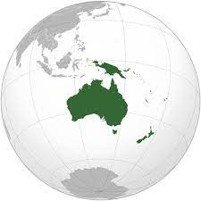

|  | Oceanía es un continente insular de la Tierra constituido por la plataforma continental de Australia, las islas de Nueva Guinea, Nueva Zelanda y los archipiélagos coralinos y volcánicos de Melanesia, Micronesia y Polinesia. Históricamente se consideró que Insulindia también formaba parte de Oceanía.2 Todas estas islas están distribuidas por el océano Pacífico. Con una extensión de 8 542 499 km²,1 se trata del continente más pequeño del planeta Tierra. |
| En otros modelos continentales, en particular en los de habla inglesa, se usa Australia en lugar de Oceanía,3 pero en este caso su definición no incluye las islas del Pacífico. En los de habla portuguesa se considera que el límite entre Asia y Oceanía es la Línea de Wallace, por lo que Timor Oriental es parte de Oceanía. Otros van más allá y consideran que toda Insulindia es parte de Oceanía.4 | |